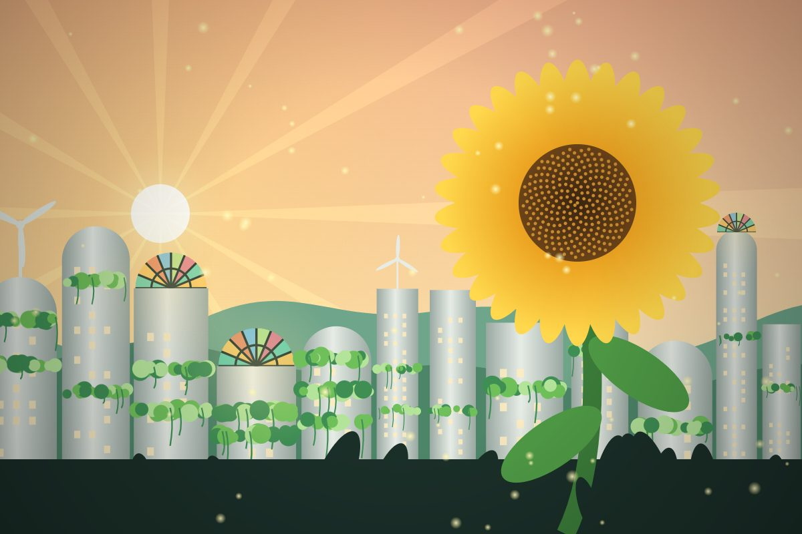
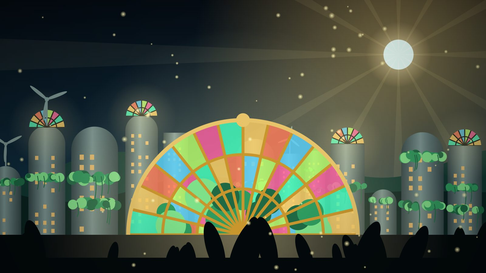
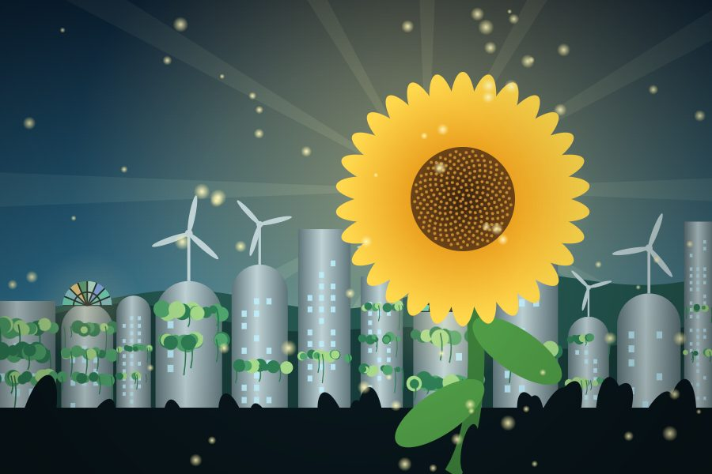
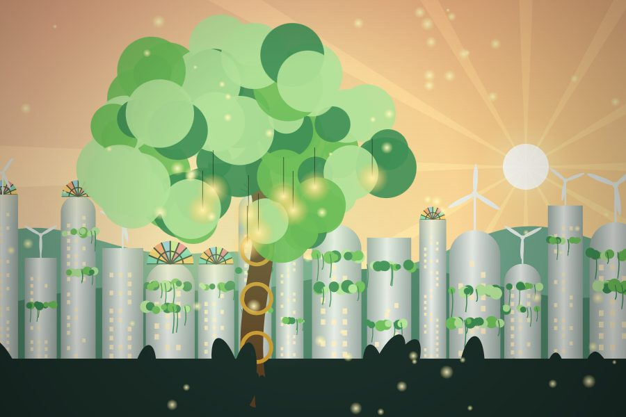
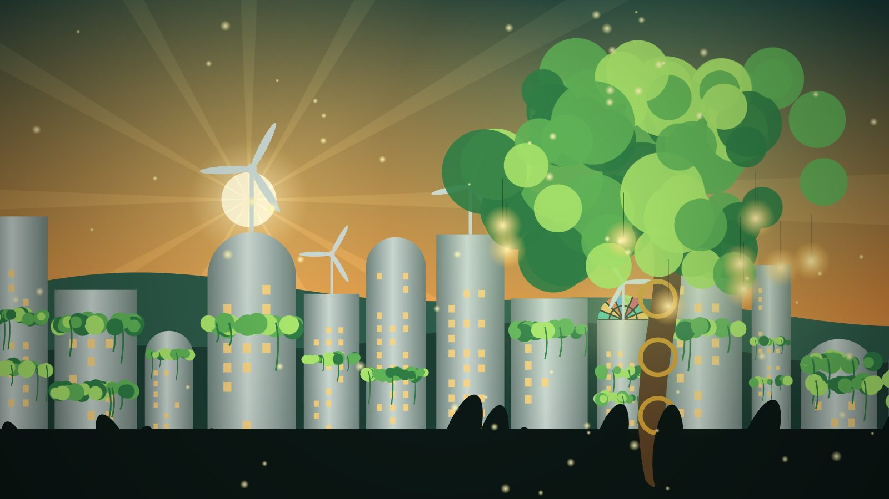
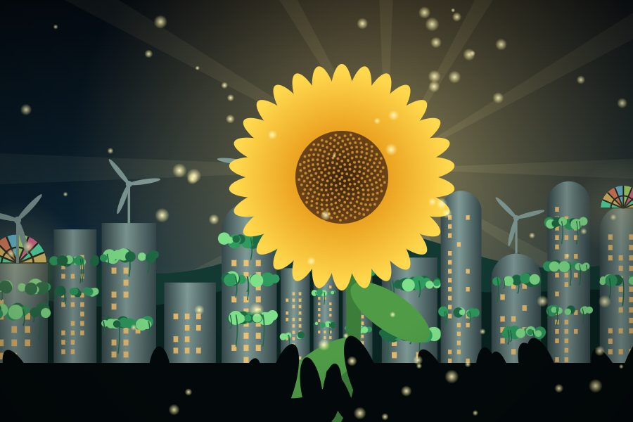
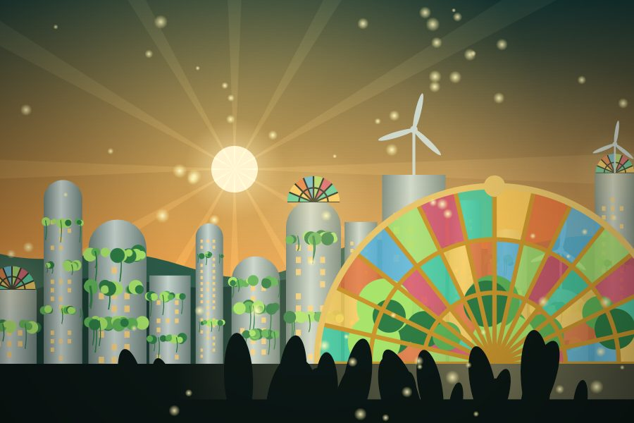
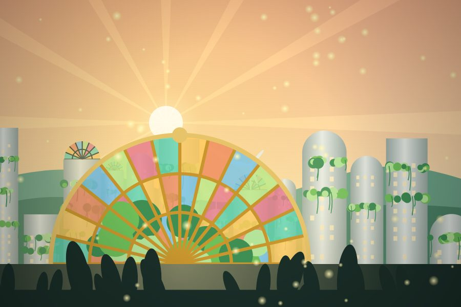
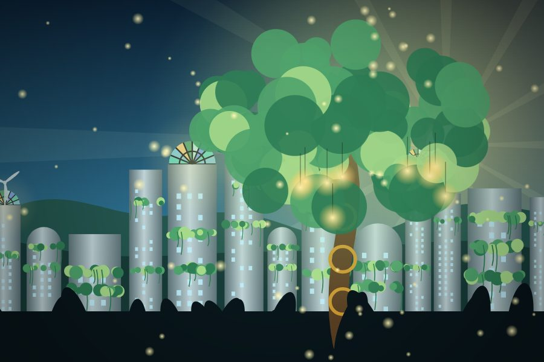
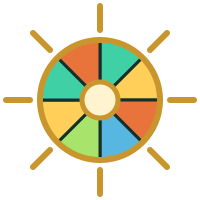

Sala 1 · La primera vidriera
Imágenes que se entienden y no saltan
Ya sabes poner una imagen con <img> y su pie con <figure> y <figcaption>. Aquí vamos a colocarla bien: con un texto alternativo que de verdad cuente algo y sin que la página salte mientras la imagen carga.
alt: la imagen contada con palabras
El texto alternativo es para quien no puede ver la imagen: personas ciegas que usan un lector de pantalla, alguien con una conexión lenta en la que la foto no carga, o Google, que no "ve" fotos y lee el alt para entenderlas. Pulsa el interruptor y mira qué quedaría de esta galería si las imágenes no cargasen:



La tercera tiene alt="" (decorativa): al apagarla no deja ningún texto, y el lector de pantalla se la salta.
| Situación | Mal | Bien |
|---|---|---|
| Foto con contenido | alt="foto" · alt="imagen de un girasol" | alt="Girasol gigante delante de torres con enredaderas" |
| Imagen decorativa (adornos, fondos) | sin atributo alt | alt="" vacío: "no hay nada que contar" |
| Imagen que es un enlace | alt="logo" | alt="Catedral de Luz: ir al inicio" (lo que pasa al pulsar) |
| Imagen con texto (un cartel) | alt="cartel" | El texto del cartel, tal cual |
| Gráfico o esquema | alt="gráfica" | La conclusión: alt="La energía solar cubre el 80 % del consumo" |
No empieces por "imagen de…" o "foto de…": el lector de pantalla ya avisa de que es una imagen. Y no quites nunca el atributo alt: si falta, muchos lectores leen en voz alta el nombre del archivo ("i-m-g-guion-cero-cuatro-punto-jota-pe-ge").
No son lo mismo. El alt sustituye a la imagen cuando no se ve. El figcaption la complementa y lo ve todo el mundo. Por eso no deben repetir el mismo texto.
width y height: que la página no salte
¿Te ha pasado leer una web en el móvil y que, de repente, el texto salte hacia abajo porque ha terminado de cargar una foto? Pasa porque el navegador no sabía cuánto iba a medir la imagen y no le reservó sitio. Con width y height en el HTML, el navegador calcula la proporción y guarda el hueco antes de descargarla.
Sin width ni height

Este párrafo salta cuando la imagen termina de llegar.
Con width="900" height="600"
Este párrafo no se mueve: su hueco ya estaba reservado.
La receta completa: en el HTML, el tamaño real del archivo; en el CSS, la regla que decide el tamaño en pantalla.
width y height en el HTML no son el tamaño en pantalla: son los píxeles reales del archivo, sin "px". El tamaño visible lo pone el CSS. Sin height: auto, la imagen se quedaría con los 600 px de alto del HTML y se deformaría.
Ese salto tiene nombre: CLS (Cumulative Layout Shift, desplazamiento acumulado del diseño). Google lo mide y penaliza a las webs que saltan. Lo verás con la herramienta Lighthouse antes de publicar tu proyecto final.
Sala 2 · La forma de la ventana
Proporciones con aspect-ratio
Cada vidriera tiene una forma: cuadrada, apaisada, alargada… La proporción es la relación entre el ancho y el alto. Con aspect-ratio le dices a una caja qué forma tiene que tener, y ella calcula su alto sola, mida lo que mida de ancho.
¿Qué significa 16/9?
16 / 9 significa "por cada 16 partes de ancho, 9 de alto". No son píxeles: es una relación. Una caja de 1600 × 900 px es 16/9, y una de 320 × 180 px, también.
avatar
foto clásica
cámara
vídeo
cine
stories
retrato
aspect-ratio en una caja
Mueve el ancho y cambia la proporción. Fíjate en que nunca escribimos el alto: lo calcula el navegador a partir del ancho y la proporción.
Si a la vez escribes width y height, aspect-ratio no tiene nada que calcular y se ignora. Da solo una medida (normalmente el ancho) y deja el alto en auto.
aspect-ratio: 1 es lo mismo que 1 / 1. También valen decimales: aspect-ratio: 1.5 = 3 / 2.
aspect-ratio en una imagen… y el problema
Si a una foto apaisada le obligas a ser cuadrada, el navegador la aplasta para que quepa. La forma del marco es correcta, pero la foto queda deformada:

¿Cómo se encaja una foto en un marco de otra forma sin deformarla? Esa es justo la pregunta de la siguiente sala.
Elige la proporción que coincide con el marco punteado
Sala 3 · Encajar la luz
Encajar sin deformar: object-fit
Cuando el marco y la foto no tienen la misma forma, algo tiene que ceder. object-fit decide cómo entra la imagen en su marco: estirándose, encogiéndose hasta caber o recortando lo que sobra.
Los cinco valores, en vivo
El marco punteado es la caja (con su width y su height). Cambia su tamaño y prueba cada valor:
| Valor | Qué hace | Úsalo para |
|---|---|---|
fill | Estira la imagen hasta llenar el marco. Deforma. Es el valor por defecto. | Casi nunca |
contain | La encoge hasta que cabe entera, sin deformar. Pueden quedar bandas vacías. | Logos, planos, productos que no se pueden cortar |
cover | La agranda hasta cubrir todo el marco, sin deformar, y recorta lo que sobra. | Fotos de galerías, portadas, avatares. El más usado |
none | Tamaño original, sin escalar. Se ve solo un trozo. | Efectos especiales |
scale-down | Elige el más pequeño entre none y contain. | Iconos que no deben crecer |
Es la misma idea que background-size: cover y contain, que viste con los fondos en el segundo bloque. La diferencia: object-fit funciona en etiquetas <img> y <video> de verdad, que tienen su alt y que Google sí "ve".
Receta: el avatar redondo
Cuatro líneas que verás en todas las webs con perfiles de usuario. Una foto apaisada se convierte en un círculo perfecto sin deformarse:
Sala 4 · Elegir el encuadre
Recortar con intención: object-position
Con object-fit: cover el navegador recorta… pero ¿por dónde? Por defecto, por el centro. Si lo importante de la foto está a un lado, puede quedarse fuera. object-position mueve el encuadre para quedarte con la parte que te interesa.
Mueve el encuadre
A la izquierda, un marco estrecho con object-fit: cover. A la derecha, la foto entera: el rectángulo dorado es la parte que se ve. Pulsa o arrastra sobre la foto grande, o usa las palabras clave:
| Valor | Qué significa |
|---|---|
center | Por defecto: 50% 50%, recorta por igual por todos los lados. |
left · right · top · bottom | Pega la imagen a ese borde: lo que se recorta es el lado contrario. |
right top | Dos palabras: primero horizontal, después vertical. |
75% 30% | Porcentajes: 0% = pegada al borde izquierdo (o superior), 100% = al derecho (o inferior). |
20px 10px | También en píxeles, aunque se usa poco. |
Un encuadre, tres marcos
Con object-position: 74% 40% el árbol sobrevive en marcos de cualquier forma. Es lo que hacen las webs de noticias para que la misma foto sirva de portada, de miniatura y de imagen para compartir:
Pon el árbol en el centro de este marco estrecho
El marco mide 140 × 320 px y usa object-fit: cover: recortando por el centro, el árbol se pierde. Pulsa o arrastra sobre la foto grande hasta que el tronco quede en el centro del encuadre.
Sala 5 · La lupa del vidriero
Zoom en tarjetas
El efecto clásico de las galerías: pasas el ratón y la foto se acerca, sin salirse de su marco. Se consigue con tres ingredientes. Dos de ellos, transform y transition, los estudiarás a fondo en las siguientes escenas de este bloque: aquí los usarás como receta.
Los tres ingredientes
overflow: hidden en el marco (la figure): todo lo que sobresalga de él, se corta. Como el bastidor de una vidriera.
transition: transform .5s en la imagen: en vez de dar un salto, el cambio dura medio segundo.
.marco:hover img { transform: scale(1.12); }: cuando el ratón está sobre el marco, la imagen crece un 12 %.
Apaga y enciende cada ingrediente y pasa el ratón por las tarjetas:



Escribimos .marco:hover img y no img:hover. Así el efecto se activa al pasar por cualquier parte de la tarjeta, también por el pie de foto. Es el selector descendiente del segundo bloque: "la img que está dentro de un .marco con el ratón encima".
Si el marco tiene border-radius, el overflow: hidden también recorta las esquinas de la foto al crecer. Por eso ves las tarjetas siempre redondeadas.
Marca solo las tres reglas que hacen el zoom correcto
La tarjeta de prueba aplica en directo las reglas que marques: pasa el ratón por ella.

Sala 6 · Una vidriera para cada ventana
<picture> y <source>
A veces no basta con encoger la imagen: en una pantalla estrecha conviene otra foto (otro encuadre), o un formato más moderno que pese menos. <picture> ofrece varias opciones al navegador y él elige la mejor.
Cómo funciona
<picture>es solo un envoltorio: no se ve, no tiene estilos propios.- Dentro van uno o varios
<source>, cada uno con su condición y su archivo ensrcset(¡no ensrc!). - Al final va un
<img>obligatorio: lleva elalt, recibe el CSS y es la opción de reserva. - El navegador lee los
sourcede arriba abajo y usa el primero que cumple su condición. Si ninguno la cumple, usa elimg.
Dirección de arte: otra foto según el ancho
El atributo media pone una condición sobre la ventana. media="(min-width: 700px)" significa "si la ventana mide al menos 700 píxeles de ancho". (Este tipo de condiciones se llaman media queries: las estudiarás a fondo en el cuarto bloque).
Abajo tienes un simulador: una mini-web dentro de una ventana cuyo ancho controlas tú. Muévelo por encima y por debajo de 700 px y mira qué foto elige el navegador:
Formatos modernos con reserva: type
Los formatos WebP y AVIF pesan bastante menos que el JPG con la misma calidad. Con type le dices al navegador qué formato es cada source: si lo entiende, lo usa; si no, pasa al siguiente. El JPG del img queda para los navegadores antiguos.
Calculando qué archivo ha elegido tu navegador…
En la demo no hay archivo AVIF, así que solo ponemos el source WebP. Si escribes un source AVIF y el archivo no existe, el navegador lo elige igualmente (porque entiende el formato), falla la descarga… y la imagen sale rota. Pon solo source de archivos que existan de verdad.
Sala 7 · El cine del invernadero
La etiqueta <video>
<video> funciona como <img>, pero con tiempo: necesita controles, varios formatos, una portada mientras no se reproduce y, para que todo el mundo lo entienda, subtítulos.
El vídeo más sencillo
controls muestra los botones de play, volumen, barra de tiempo y pantalla completa. width y height reservan el hueco, igual que en las imágenes, para que la página no salte.
controls no lleva valor: basta con escribirlo. Si está, es "sí"; si no está, es "no". Lo mismo pasa con autoplay, muted, loop, playsinline o default. Escribir controls="false" no lo apaga: hay que quitarlo.
El vídeo completo, pieza a pieza
Este es un vídeo real de esta catedral. Activa y desactiva cada atributo y mira cómo cambian el reproductor y el código:
| Pieza | Para qué sirve |
|---|---|
<source> | Varias versiones del vídeo. El navegador usa la primera que sabe reproducir. type le ahorra descargar para averiguarlo. |
poster | La imagen de portada que se ve antes de darle al play. |
preload | none: no descarga nada hasta el play · metadata: solo la duración y el tamaño · auto: puede descargarlo entero aunque nadie lo mire (gasta datos). |
loop | Al terminar, vuelve a empezar. |
muted | Empieza sin sonido. |
Texto dentro de <video> | Solo lo ven los navegadores tan antiguos que no conocen la etiqueta. Buen sitio para un enlace de descarga. |
MP4 (con códec H.264) funciona en todos los navegadores. WebM suele pesar menos. Si solo vas a poner uno, que sea MP4. Para convertir vídeos, programas gratuitos como HandBrake.
Subtítulos con <track> y WebVTT
Los subtítulos van en un archivo de texto aparte con formato WebVTT (extensión .vtt). <track> lo conecta con el vídeo. Así es el archivo de esta demo:
- La primera línea es siempre
WEBVTT. - Cada subtítulo es un bloque: un número (opcional), la línea de tiempos
inicio --> finy el texto. - Los bloques se separan con una línea en blanco.
src es el archivo .vtt; srclang, el idioma del texto; label, el nombre que aparece en el menú del reproductor; y default hace que salgan activados desde el principio. kind dice qué tipo de pista es:
| kind | Para quién |
|---|---|
subtitles | Traducción de los diálogos (quien oye pero no entiende el idioma). |
captions | Diálogos y sonidos importantes, como "[suena una campana]" (personas sordas). |
descriptions | Descripción de lo que se ve (personas ciegas). |
chapters | Capítulos para saltar por el vídeo. |
Los subtítulos no funcionan si abres el HTML con doble clic (file://): el navegador bloquea el archivo .vtt por seguridad. Ábrelo con Live Server de VS Code y funcionará.
Sala 8 · La ventana viva
Vídeo de fondo: autoplay, muted, loop, playsinline
Los vídeos decorativos de las portadas arrancan solos, sin sonido y en bucle. Parece fácil… pero los navegadores tienen reglas estrictas. Para que funcione en todos, también en el iPhone, hacen falta varios atributos juntos.
Fragmento 8 · pendienteLas reglas de los navegadores
Pide que el vídeo empiece solo. Pero…
…los navegadores bloquean la reproducción automática de vídeos con sonido (a nadie le gusta que una web le grite). Sin muted, el autoplay no funciona.
Sin él, el iPhone abre el vídeo a pantalla completa. Con él, se reproduce en su sitio, dentro de la página.
Vuelve a empezar al terminar. Imprescindible en un fondo.
La imagen que se ve mientras el vídeo carga (o si no puede reproducirse).
Con autoplay, el navegador lo descarga igualmente; preload cobra importancia en vídeos sin autoplay.
Un banner de vídeo
Juntamos esta sala con las anteriores: aspect-ratio para la forma y object-fit: cover para que el vídeo rellene el marco sin deformarse.
Para poner un texto encima del vídeo necesitas position, que verás en la escena del puerto de dirigibles. Y en el cuarto bloque aprenderás prefers-reduced-motion para apagar estos vídeos a quien le marean las animaciones.
Un vídeo que se mueve más de 5 segundos debería poder pausarse. Si no es puramente decorativo, añade controls.
Haz que el vídeo de fondo funcione en este iPhone
Activa los atributos necesarios. El teléfono te dirá qué pasa con cada combinación.
Sala 9 · El jardín de las campanillas
La etiqueta <audio>
<audio> funciona exactamente igual que <video>, pero sin imagen: controls, varios <source>, loop, preload… Ya sabes casi todo.
Las campanillas de viento del invernadero
| Formato | Características |
|---|---|
MP3 | El de toda la vida. Funciona en todas partes. Buena opción por defecto. |
WebM / Ogg (Opus) | Más moderno: mucha calidad con poco peso. |
WAV | Sin comprimir: calidad máxima y muchísimo peso. Nuestras campanillas: 345 KB en WAV frente a 71 KB en WebM. |
Buenas prácticas
Además de molestar, los navegadores lo bloquean. Deja que sea la persona quien pulse el play.
Sin controles, el audio no se puede pausar ni bajar de volumen. En audio, los controles son la única interfaz.
Para personas sordas, debajo del audio pon un texto con lo que se oye.
Transcripción: [Durante ocho segundos suenan campanillas de viento de metal, suaves y agudas, sobre un murmullo de brisa].
Sala 10 · Ventanas a otros mundos
<iframe>: YouTube y Google Maps
Un <iframe> mete otra página web entera dentro de la tuya: un vídeo de YouTube, un mapa de Google… Es una ventana que da a otro edificio: tú abres el hueco, pero lo de dentro lo controla otra web.
Un vídeo de YouTube
- En YouTube, debajo del vídeo, pulsa Compartir y después Insertar.
- Copia el código
<iframe…>y pégalo en tu HTML. - Repásalo: añade
loading="lazy", comprueba que tengatitley quita el ancho y el alto fijos con CSS.
| Atributo | Para qué sirve |
|---|---|
src | La dirección /embed/…. La de "ver" (watch?v=) no se puede incrustar. |
title | Obligatorio: lo leen los lectores de pantalla para saber qué hay en la ventana. |
loading="lazy" | No lo carga hasta que te acercas (sala 11). Un vídeo de YouTube pesa más de 1 MB. |
allow | Los permisos que le das al vídeo: reproducción automática, imagen en imagen… |
referrerpolicy | Qué datos de tu web se envían a YouTube. |
allowfullscreen | Deja usar la pantalla completa. |
youtube-nocookie.com es la versión de YouTube que no guarda cookies de seguimiento hasta que le das al play. En YouTube: Insertar → "Habilitar el modo de privacidad mejorado".
Un mapa de Google Maps
- Busca el lugar en Google Maps y pulsa Compartir.
- Pestaña Insertar un mapa → Copiar HTML.
iframe que se adapta
YouTube te da el código con width="560" height="315": un tamaño fijo que se sale en el móvil. Con lo aprendido en la sala 2 se arregla en tres líneas:
Incrusta solo webs de confianza. Y no todas se dejan: muchas (Google, tu banco, Instagram…) prohíben aparecer dentro de un iframe por seguridad. Si ves un recuadro gris con un error, es eso. Además, frameborder="0" está obsoleto: usa border: 0 en el CSS.
Sala 11 · Que la luz llegue rápido ⭐
Rendimiento: loading="lazy" y compañía
Las imágenes son lo que más pesa en casi cualquier web. Una página lenta pierde visitas y gasta los datos del móvil. Aquí tienes cuatro hábitos: carga diferida, formatos modernos, peso razonable y srcset. Y cómo comprobarlo tú mismo.
Fragmento 11 · pendienteloading="lazy": solo lo que vas a ver
Por defecto, el navegador descarga todas las imágenes al abrir la página, aunque estén muy abajo y nunca llegues a verlas. Con loading="lazy" espera a que te acerques. Es como las luces de esta catedral: se encienden cuando entras en la sala.
Pruébalo: dentro de esta caja hay 12 fotos. Ponla en modo lazy y baja despacio por la caja: los contadores suben a medida que llegas. Después prueba el modo eager (todo de golpe).
Pulsa uno de los dos botones.
Fíjate en que la imagen lleva width y height: con lazy son imprescindibles, porque reservan su hueco aunque todavía no se haya descargado. Y loading="lazy" también funciona en los iframes de YouTube o Google Maps, que pesan mucho.
La imagen principal, la que se ve nada más entrar (la portada), nunca debe ser lazy: la queremos cuanto antes. Déjala normal (loading="eager" es el valor por defecto) e incluso puedes darle prioridad con fetchpriority="high".
Formatos: el mismo paisaje, distinto peso
Estas barras miden el peso real de los archivos de esta página. La misma imagen, con la misma calidad, en JPG y en WebP:
| Formato | Úsalo para | Notas |
|---|---|---|
JPG | Fotos | Universal. Sin transparencia. |
PNG | Capturas de pantalla, imágenes con transparencia | Pesa mucho con fotos. |
WebP | Fotos y transparencias | Un 25-50 % menos que JPG. Lo entienden todos los navegadores actuales. |
AVIF | Fotos | Aún más ligero que WebP. Más reciente: ponlo con reserva en <picture>. |
SVG | Logos, iconos, ilustraciones planas | Vectorial: nítido a cualquier tamaño y muy ligero. |
GIF | Evítalo | Para animaciones, un vídeo MP4 muted loop autoplay pesa diez veces menos. |
Entre 100 y 300 KB, y como mucho unos 1600 px de ancho.
Por debajo de 500 KB.
Por debajo de 50 KB.
La foto del móvil pesa 4 o 5 MB y mide 4000 px: nunca la subas tal cual. Redúcela y conviértela gratis en squoosh.app, una web de Google donde ves el antes y el después.
srcset y sizes: el tamaño justo para cada pantalla
<picture> cambia de foto. srcset ofrece la misma foto en varios tamaños y el navegador descarga la más pequeña que se vea bien. Un móvil no necesita una foto de 1600 px.
400wno es un tamaño que tú decides: le cuentas al navegador cuánto mide cada archivo (la w es de width).sizesle dice qué ancho ocupará la imagen en pantalla.100vw= todo el ancho de la ventana (vw lo verás en el cuarto bloque).- Con esas dos pistas, más la densidad de la pantalla, el navegador elige el archivo. En una pantalla con el doble de píxeles (un móvil moderno), pedirá uno el doble de grande.
Mueve el ancho en el simulador: cada archivo lleva escrito su tamaño.
Una vez que el navegador ha descargado la foto grande, aunque estreches la ventana no vuelve a la pequeña: ya la tiene y se ve mejor. Pulsa Recargar en el simulador para empezar de cero.
Compruébalo: la pestaña Red (Network)
- Abre tu web y pulsa F12. Ve a la pestaña Red (Network).
- Marca Desactivar caché y filtra por Img (o Media para vídeo y audio).
- Recarga con Ctrl + F5. Cada fila es un archivo: mira las columnas Tamaño y Tiempo.
- Baja por la página: las imágenes
lazyaparecerán en la lista a medida que llegues a ellas. - Truco: en el desplegable Sin limitación elige 3G lenta para notar la diferencia como en un móvil con mala cobertura.
Hazlo ahora con esta misma página y la caja de 12 fotos de arriba.
Que la página cargue al principio menos de 60 KB
La portada se ve nada más entrar; el resto está más abajo. Elige el formato y el modo de carga de cada elemento. Solo cuenta lo que se descarga al abrir la página.
Sala 12 · El archivo del vidriero
Referencia: svg, canvas, embed, object, map y area
Otras etiquetas para dibujar o incrustar contenido. No las usarás todos los días, pero tienes que reconocerlas y saber cuándo tiene sentido cada una.
Fragmento 12 · pendiente<svg>: dibujos que nunca se pixelan
Un SVG no guarda píxeles: guarda instrucciones ("un círculo aquí, de este radio y este color"). Por eso se ve nítido a cualquier tamaño y pesa muy poco. Ideal para logos e iconos. Se puede usar como archivo en un <img> o escribir su código directamente en el HTML:

El mismo archivo a 70 px y a 160 px: igual de nítido.| Pieza | Qué significa |
|---|---|
viewBox="0 0 120 120" | El "lienzo" del dibujo: 120 × 120 unidades. El SVG se estira a cualquier tamaño sin perder calidad. |
role="img" + aria-label | Hacen de alt cuando el SVG va escrito dentro del HTML. |
<circle cx cy r> | Un círculo: centro (cx, cy) y radio r. |
fill · stroke · stroke-width | Relleno, color del borde y grosor del borde. |
<canvas>: un lienzo para pintar con JavaScript
<canvas> es un rectángulo vacío donde se pinta con JavaScript, píxel a píxel. Se usa para juegos, gráficas, editores de fotos… Las imágenes de esta página se generaron así. Como JavaScript es del octavo bloque, aquí solo tienes que reconocerlo:
El HTML solo crea el lienzo vacío; el texto de dentro aparece únicamente en navegadores sin canvas. Todo lo que se ve lo pinta JavaScript, que verás en el octavo bloque.
<embed> y <object>: incrustar archivos
Sirven para meter un archivo externo (un PDF, un SVG…) dentro de la página. Hoy se usan poco: para vídeos tienes <video>, para imágenes <img> y para webs <iframe>. Su uso más habitual es mostrar un PDF.
Si tienes que incrustar un PDF, mejor <object>, porque permite poner un enlace de descarga por si no se puede mostrar (por ejemplo, en muchos móviles). Y en el móvil, lo más cómodo suele ser un simple enlace al PDF.
<map> y <area>: zonas clicables en una imagen
Un mapa de imagen convierte partes de una foto en enlaces. Pasa el ratón sobre el árbol, el sol y la ciudad, o activa "ver zonas":
Las coordenadas están en píxeles fijos: si la imagen se encoge (en el móvil), las zonas no se encogen con ella y dejan de coincidir. Por eso esta demo tiene ancho fijo y hoy se usan poco. La alternativa moderna son enlaces colocados encima con position, que verás en este mismo bloque.
El taller del vidriero
Monta tu galería de vitrales
Junta todo lo aprendido en un componente de verdad: una galería de tarjetas con proporción fija, recorte inteligente, zoom, pie de foto y carga diferida. Elige las opciones y llévate el código completo y comentado.
Resumen
Chuleta
Todo lo de esta escena en una tabla.
| Código | Qué hace | Recuerda |
|---|---|---|
| Imágenes | ||
| <img src alt width height> | Una imagen | Etiqueta vacía · alt siempre |
| alt="" | Imagen decorativa | Vacío, pero presente |
| width · height | Tamaño real del archivo | Evitan que la página salte (CLS) |
| img{max-width:100%;height:auto} | La regla de oro | + display:block |
| <figure> + <figcaption> | Imagen con pie de foto | alt sustituye, figcaption complementa |
| Proporción y recorte | ||
| aspect-ratio: 16 / 9 | Forma de la caja | Da solo el ancho |
| object-fit: cover | Rellena recortando | Fotos y avatares |
| object-fit: contain | Cabe entera | Logos y planos |
| object-fit: fill | Estira (deforma) | Valor por defecto |
| object-position: 75% 30% | Qué parte se ve al recortar | Horizontal y vertical |
| avatar | width + aspect-ratio:1 + cover + radius 50% | Círculo perfecto |
| Zoom en tarjetas | ||
| .marco{overflow:hidden} | El marco recorta | En el marco, no en la img |
| img{transition:transform .5s} | Cambio suave | En el estado normal |
| .marco:hover img{transform:scale(1.1)} | Crece al pasar el ratón | Hover en el marco |
| picture | ||
| <source media="…" srcset="…"> | Otra foto si se cumple la condición | srcset, no src |
| <source type="image/webp" srcset="…"> | Formato moderno con reserva | Solo si existe el archivo |
| <img> final | Reserva + alt + CSS | Obligatorio |
| Vídeo y audio | ||
| <video controls poster preload> | Vídeo con controles y portada | preload: none · metadata · auto |
| <source src type> | Varios formatos | MP4 para todos · WebM más ligero |
| <track kind srclang label default> | Subtítulos .vtt | Necesita Live Server |
| autoplay muted loop playsinline | Vídeo de fondo | Sin muted no arranca · sin playsinline, pantalla completa en iPhone |
| <audio controls> | Audio | Nunca autoplay con sonido · transcripción |
| iframe | ||
| <iframe src title loading="lazy"> | Otra web dentro de la tuya | title obligatorio |
| YouTube | Compartir → Insertar | /embed/ · youtube-nocookie |
| Google Maps | Compartir → Insertar un mapa | Pesa: lazy |
| iframe{width:100%;aspect-ratio:16/9;border:0} | iframe flexible | Nada de frameborder |
| Rendimiento | ||
| loading="lazy" | Descarga al acercarse | Nunca en la portada |
| fetchpriority="high" | Prioridad a la imagen principal | Solo una o dos |
| WebP · AVIF | Formatos ligeros | 25-50 % menos que JPG |
| srcset="a.jpg 400w, b.jpg 800w" sizes="100vw" | Misma foto, varios tamaños | w = ancho real del archivo |
| F12 → Red → Img | Comprobar pesos y lazy | Desactivar caché · 3G lenta |
| Referencia | ||
| <svg> | Gráfico vectorial | Logos e iconos |
| <canvas> | Lienzo para JavaScript | Juegos y gráficas |
| <object> · <embed> | Incrustar archivos (PDF) | object admite alternativa |
| <map> + <area> | Zonas clicables en una imagen | Coordenadas fijas: no se adaptan |
El corazón del rosetón
Examen final
Todas las preguntas de la escena, con explicación. Si aciertas todas las de una sala, se enciende su pétalo. Si aciertas el 80 % del examen, se enciende el corazón del rosetón.
Corazón del rosetón · pendientePreguntas de las salas
Preguntas generales
Arregla el código
Imágenes, vídeos e iframes que no se comportan como deberían. Encuentra el fallo de cada uno.